One-of-one pendants made from shoreline finds collected in Niagara.
Each listing includes the pendant + chain shown and uses a
Pay What You Think Is Fair model.
Collected by hand along the Niagara shoreline and released in small drops.
Current Drop
Current release: 29 pendants total, with 2 already claimed.
Stone names are likely identifications based on visual characteristics.
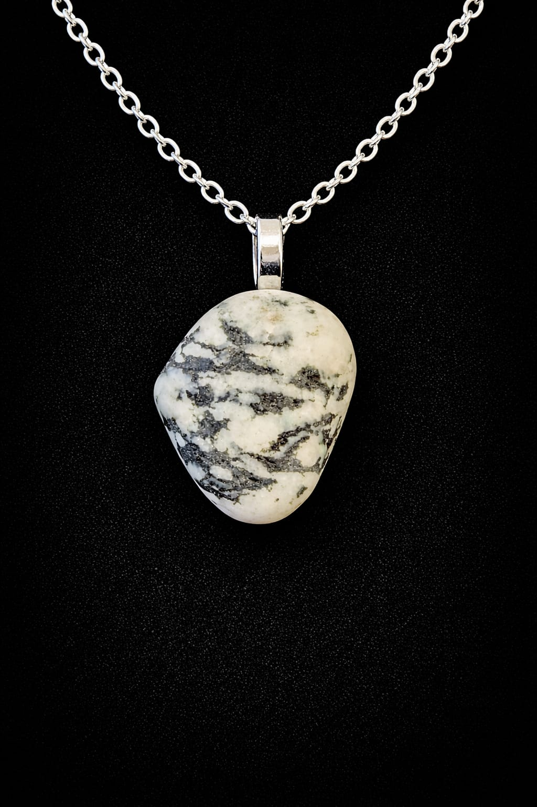
Pendant 28
Likely: dendritic jasper / dendritic marble • Niagara shoreline find • Pendant + chain included
Creamy white with dark branching lines that read almost like ink or roots. The contrast is strong, but the overall look is still clean and natural.
One of the most graphic stones in the collection.
Pay What You Think Is Fair • Suggested Minimum: $20
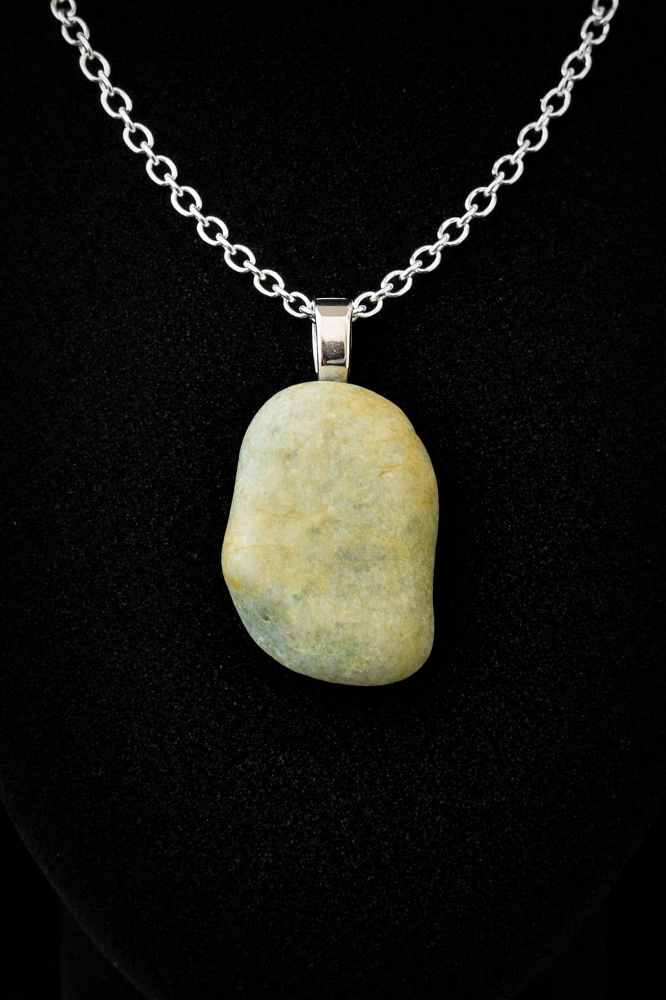
Pendant 21
Likely: green-grey gneiss • Niagara shoreline find • Pendant + chain included
A darker piece with green, charcoal, and grey banding across the surface. It has a more angular, structured look than the rounder pendants.
One of the more architectural stones in the drop.
Pay What You Think Is Fair • Suggested Minimum: $20
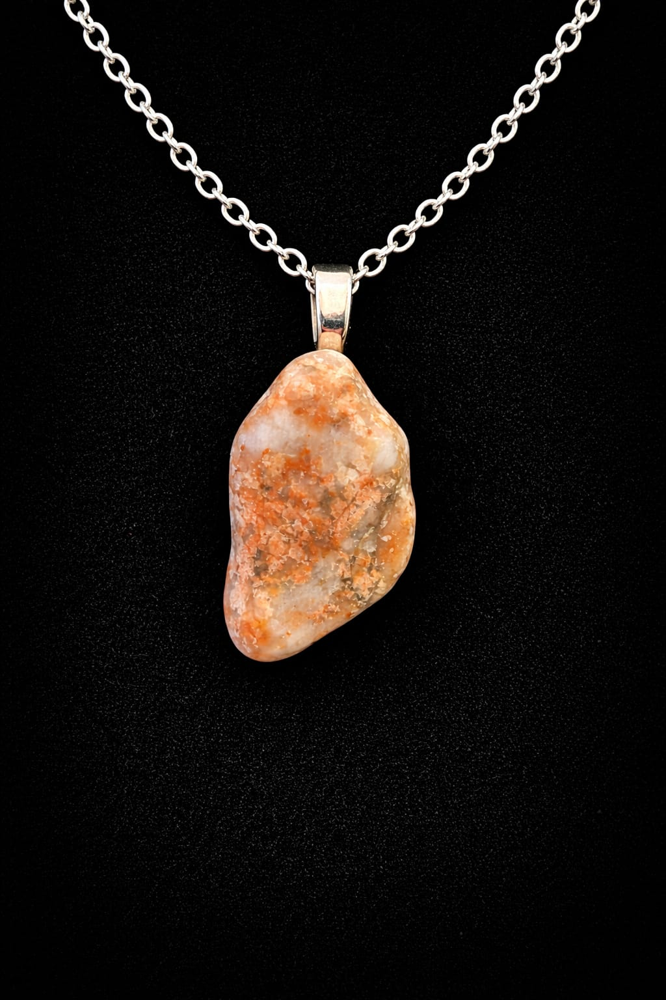
Pendant 27
Likely: brecciated jasper / iron-stained quartz • Niagara shoreline find • Pendant + chain included
Orange, cream, and pale mineral patches break across the surface in a way that feels warmer and brighter than most of the drop. It still reads natural, just with a little more energy.
A stronger colour piece without looking artificial.
Pay What You Think Is Fair • Suggested Minimum: $20
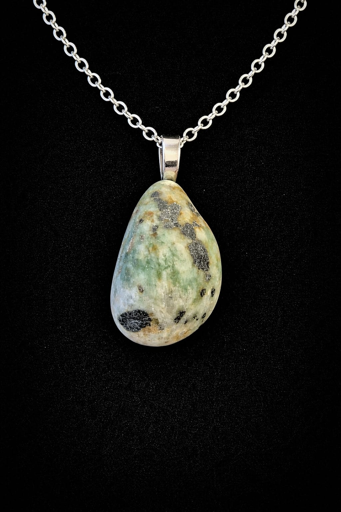
Pendant 24
Likely: serpentine with darker inclusions • Niagara shoreline find • Pendant + chain included
A pale green-and-cream stone with darker mineral patches that give it more contrast than the softer green pieces. The shape keeps it polished while the surface stays interesting.
A balanced piece with a bit more edge.
Pay What You Think Is Fair • Suggested Minimum: $20
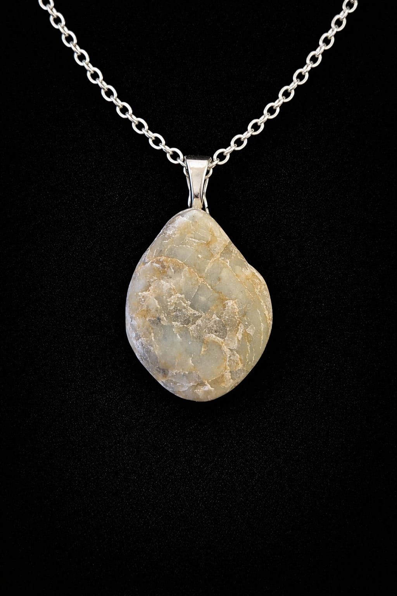
Pendant 23
Likely: quartz / chalcedony • Niagara shoreline find • Pendant + chain included
A more translucent stone with sandy beige mineral patterning under the surface. It catches light differently than the flatter matte stones nearby.
One of the more luminous pieces in the collection.
Pay What You Think Is Fair • Suggested Minimum: $20
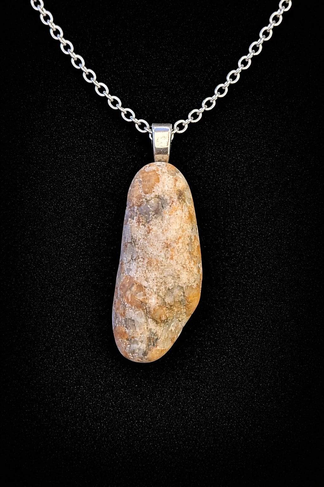
Pendant 29
Likely: quartzite / conglomerate • Niagara shoreline find • Pendant + chain included
An elongated shoreline stone with a rougher mineral mix in cream, tan, and soft grey. It has more texture than most of the smoother pieces in this release and keeps a more geological look.
A good option if you like natural surface detail and a longer shape.
Pay What You Think Is Fair • Suggested Minimum: $20
Pendant 18
Likely: quartzite / granite mix • Niagara shoreline find • Pendant + chain included
A high-contrast piece with creamy white across the top and a darker mineral section below. It feels a little heavier visually than the smoother stones.
A solid choice if you like contrast and texture.
Pay What You Think Is Fair • Suggested Minimum: $20
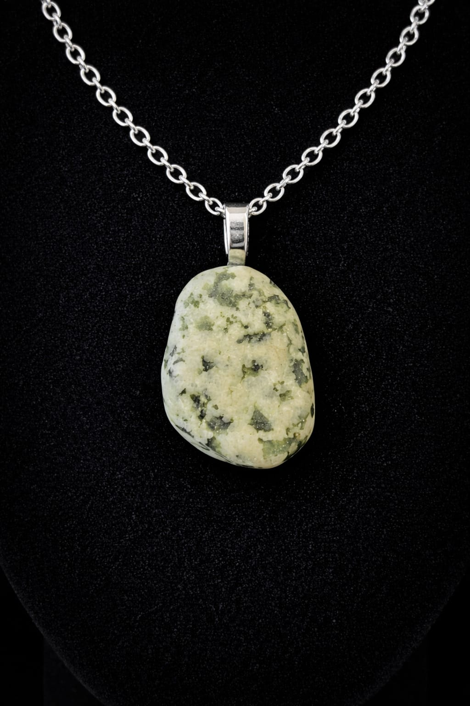
Pendant 20
Likely: epidote-bearing stone / mossy granite • Niagara shoreline find • Pendant + chain included
A pale base with moss-like green mineral patterning scattered across the face. The markings feel organic and very shoreline-found.
Soft overall, but still visually distinct.
Pay What You Think Is Fair • Suggested Minimum: $20
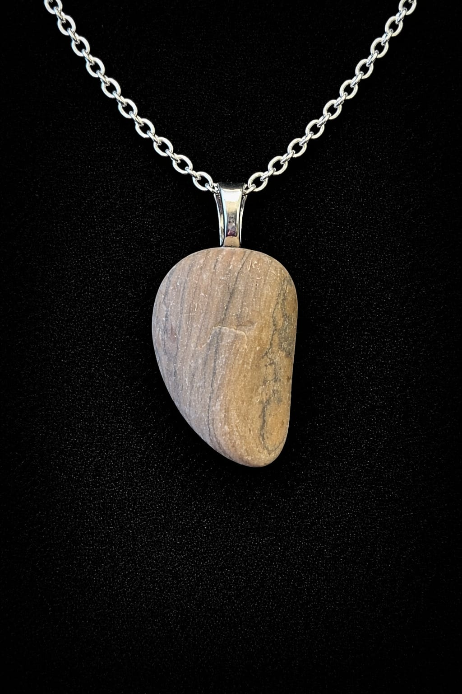
Pendant 25
Likely: banded sandstone / gneiss • Niagara shoreline find • Pendant + chain included
Soft beige and grey lines run through this stone like grain or shoreline layering. The pattern is subtle but very clean.
A calm, neutral piece with good natural banding.
Pay What You Think Is Fair • Suggested Minimum: $20
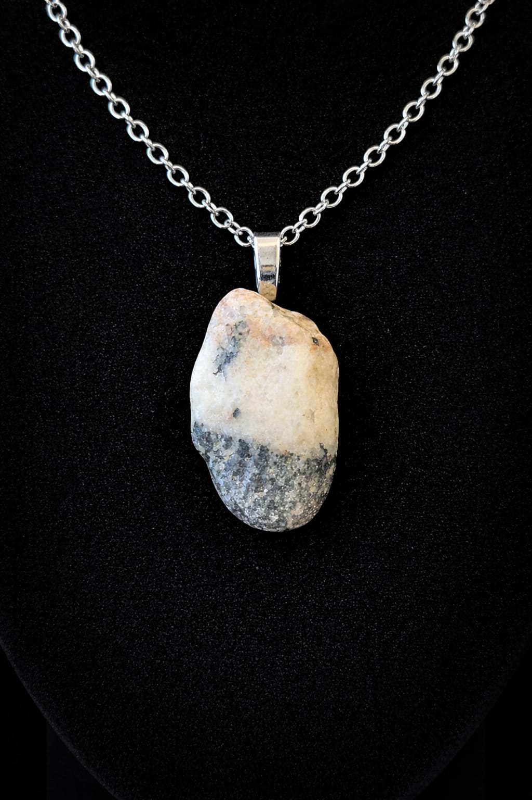
Pendant 19
Likely: banded gneiss / sandstone • Niagara shoreline find • Pendant + chain included
Long soft striping in green-grey tones gives this stone a naturally layered look. It reads a little like sediment or shoreline drift lines.
Quiet, linear, and very easy to wear.
Pay What You Think Is Fair • Suggested Minimum: $20
Pendant 22
Likely: serpentine / greenstone • Niagara shoreline find • Pendant + chain included
A smooth pale green stone with very little visual clutter and a clean, wearable shape. Simple, natural, and easy to pair with anything.
A quieter piece that relies on colour more than pattern.
Pay What You Think Is Fair • Suggested Minimum: $20
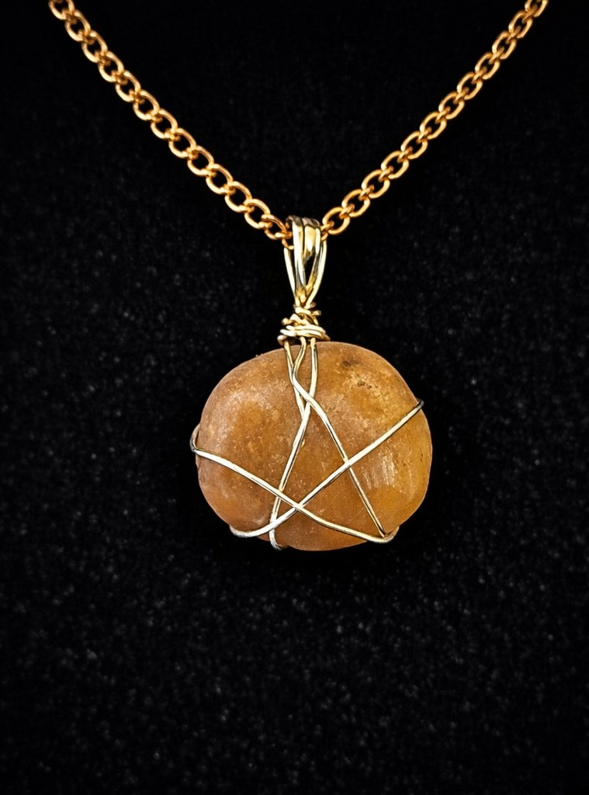
Pendant 17
Likely: jasper • Niagara shoreline find • Pendant + chain included
A warm golden-brown stone with a softer surface and simple wire detail. It is one of the warmer earth-toned pieces in the release without feeling too dark.
Very wearable and nicely balanced in colour.
Pay What You Think Is Fair • Suggested Minimum: $20
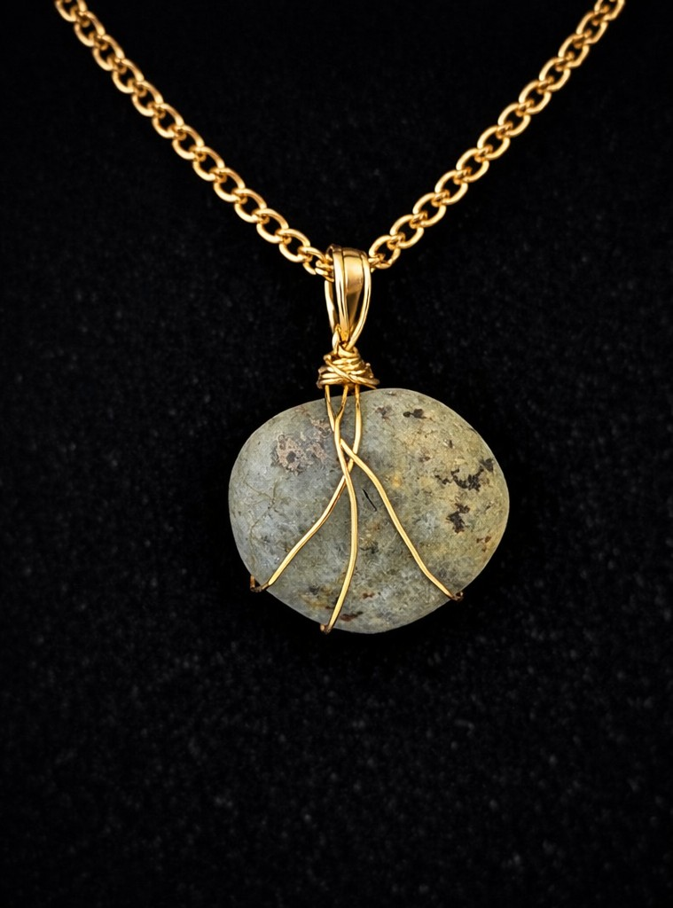
Pendant 16
Likely: green jasper / serpentine • Niagara shoreline find • Pendant + chain included
A rounded stone with muted green and grey tones, finished with a lighter wire wrap. It feels balanced and natural without being too polished-looking.
A good in-between piece if you like colour but not too much contrast.
Pay What You Think Is Fair • Suggested Minimum: $20
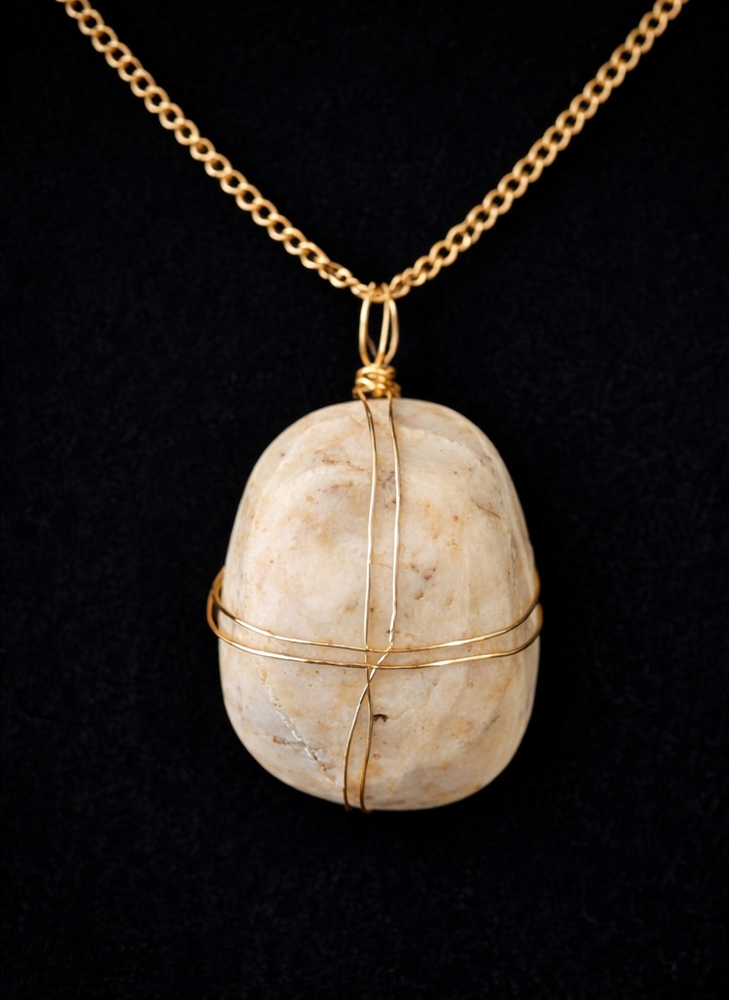
Pendant 14
Likely: quartzite / pale jasper • Niagara shoreline find • Pendant + chain included
A larger pale stone hand-wrapped in gold wire. The scale makes it one of the bolder pieces in the collection even though the colour stays soft.
Strong presence, simple finish, very one of one.
Pay What You Think Is Fair • Suggested Minimum: $20
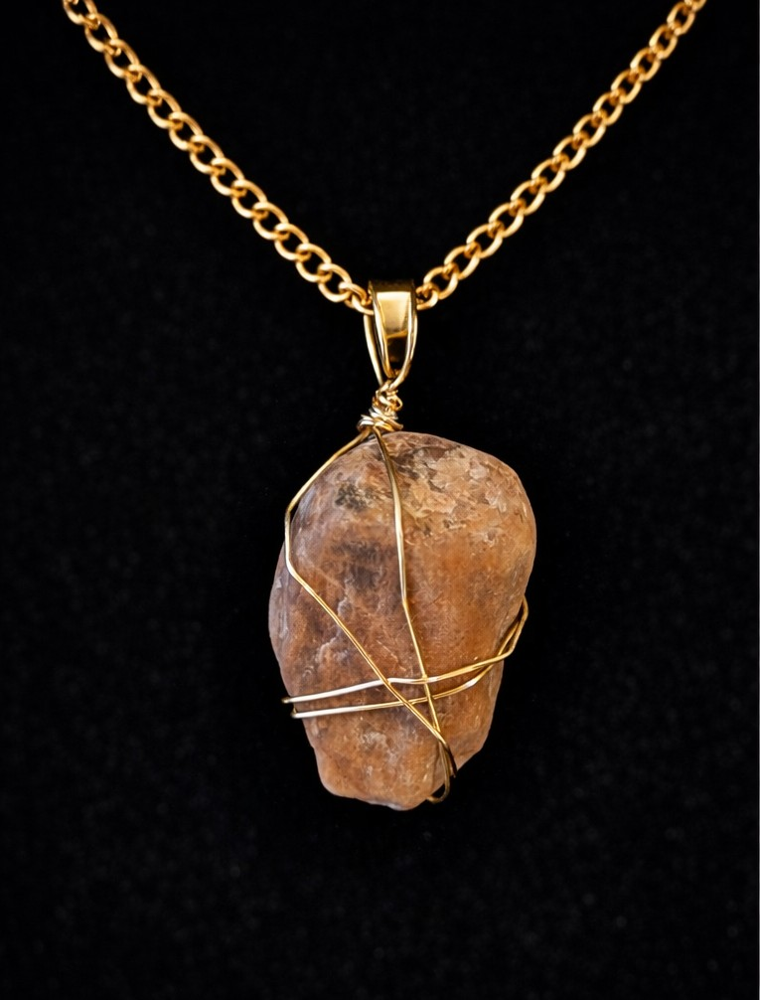
Pendant 15
Likely: jasper / sandstone • Niagara shoreline find • Pendant + chain included
Warm earthy tones and natural layering give this stone a grounded look. The wrap follows the stone well without overpowering it.
Straightforward, natural, and solid.
Pay What You Think Is Fair • Suggested Minimum: $20
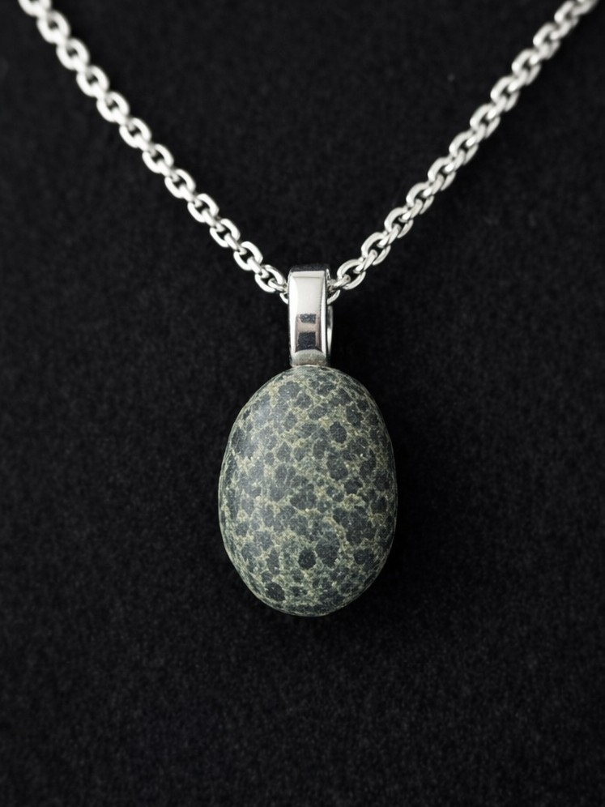
Pendant 8
Likely: orbicular jasper / spotted greenstone • Niagara shoreline find • Pendant + chain included
A deep green stone with a naturally spotted surface that makes it more unusual than the rest of the collection. Dark, patterned, and very distinct.
One of the boldest green pieces in the drop.
Pay What You Think Is Fair • Suggested Minimum: $20
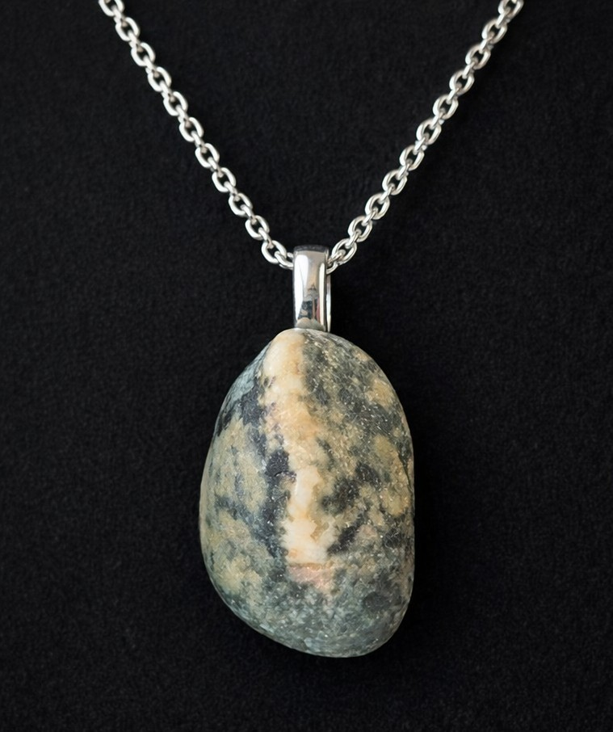
Pendant 5
Likely: banded greenstone / gneiss • Niagara shoreline find • Pendant + chain included
A stronger stone with dark green and pale mineral banding running through it. There is a lot of natural pattern here without it feeling busy.
One of the more distinctive striped stones.
Pay What You Think Is Fair • Suggested Minimum: $20
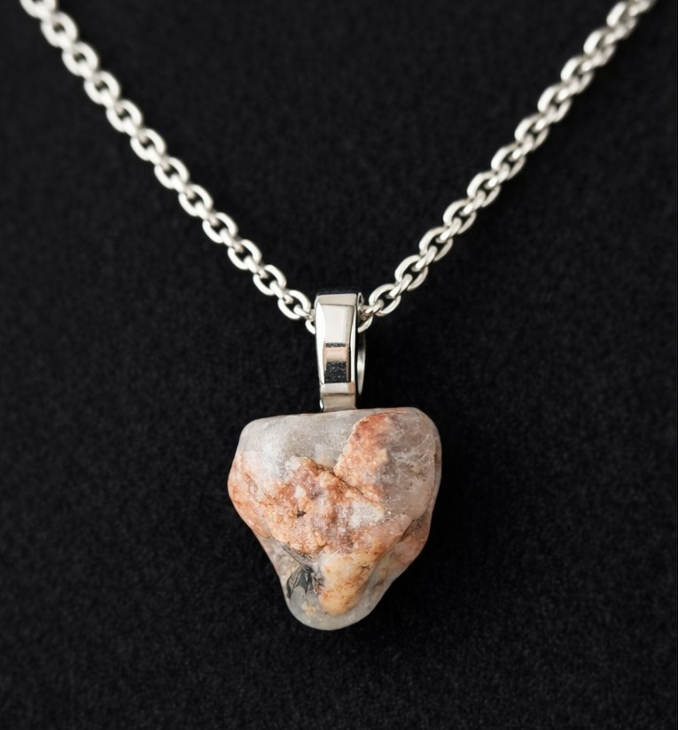
Pendant 7
Likely: brecciated jasper / mixed quartz stone • Niagara shoreline find • Pendant + chain included
A more irregular stone with warm pink, cream, and mineral variation across the surface. It has more texture and variation than the smoother pendants.
A good choice if you want something less uniform.
Pay What You Think Is Fair • Suggested Minimum: $20
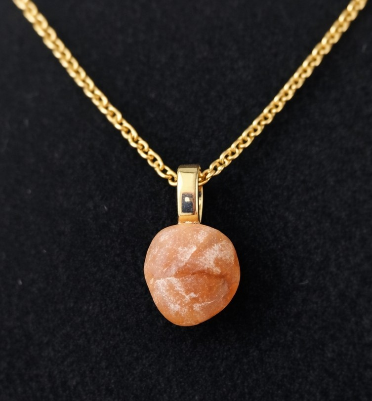
Pendant 6
Likely: peach jasper / feldspar-rich stone • Niagara shoreline find • Pendant + chain included
A warm peach-toned stone with a softer, rounder feel than most of the release. It pairs especially well with gold-toned metal.
A warm piece without being too bright.
Pay What You Think Is Fair • Suggested Minimum: $20
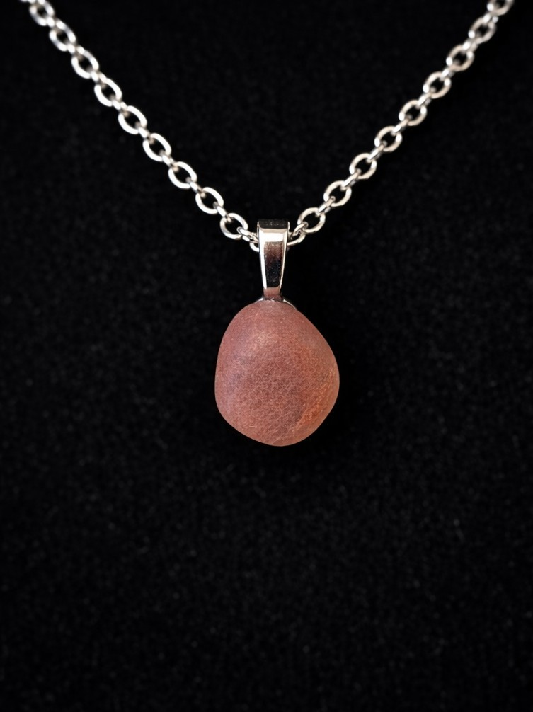
Pendant 12
Likely: pink quartzite / jasper • Niagara shoreline find • Pendant + chain included
A smaller rose-toned stone with a matte, water-softened finish. It is simple, warm, and more understated than the brighter orange pieces.
A quiet colour piece that still stands out.
Pay What You Think Is Fair • Suggested Minimum: $20
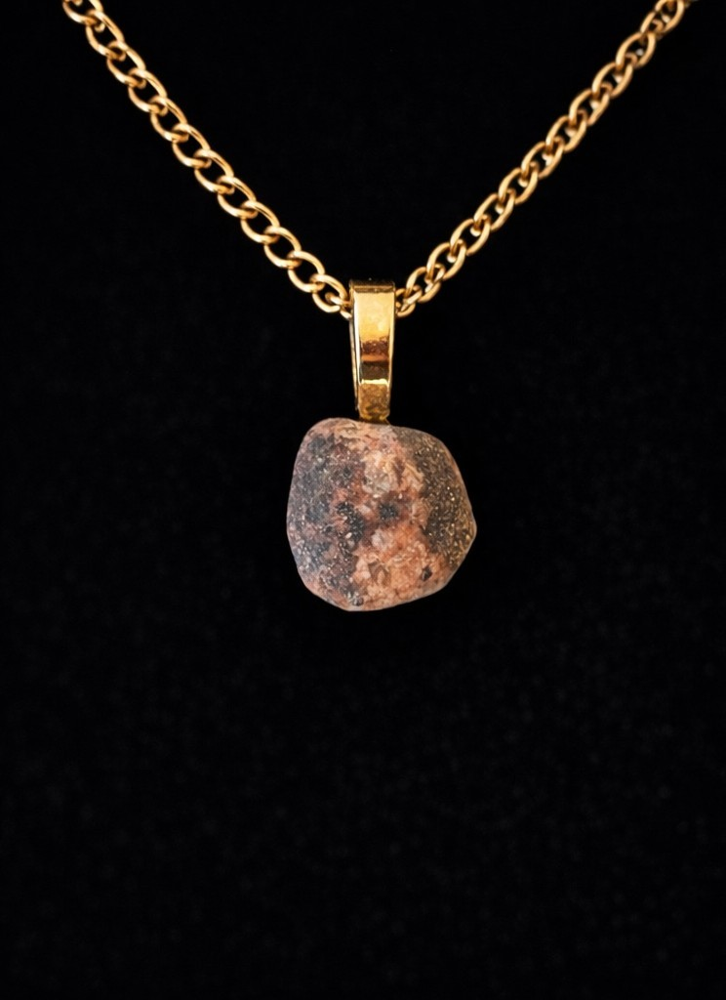
Pendant 13
Likely: jasper / ironstone • Niagara shoreline find • Pendant + chain included
A rougher-looking piece with warm brown and darker mineral contrast. It feels more rugged and less refined than the smoother pendants nearby.
One of the more raw-looking pieces in the drop.
Pay What You Think Is Fair • Suggested Minimum: $20
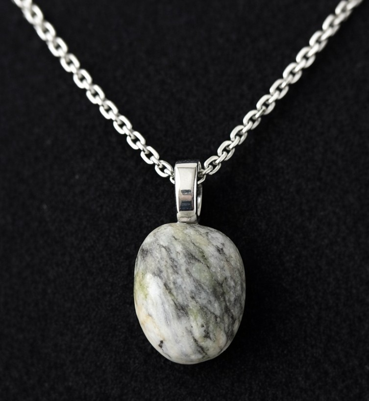
Pendant 3
Likely: granite / gneiss • Niagara shoreline find • Pendant + chain included
Grey and white patterning gives this piece more movement than the flatter cream stones. The oval shape keeps it classic and easy to wear.
A solid everyday shoreline piece.
Pay What You Think Is Fair • Suggested Minimum: $20
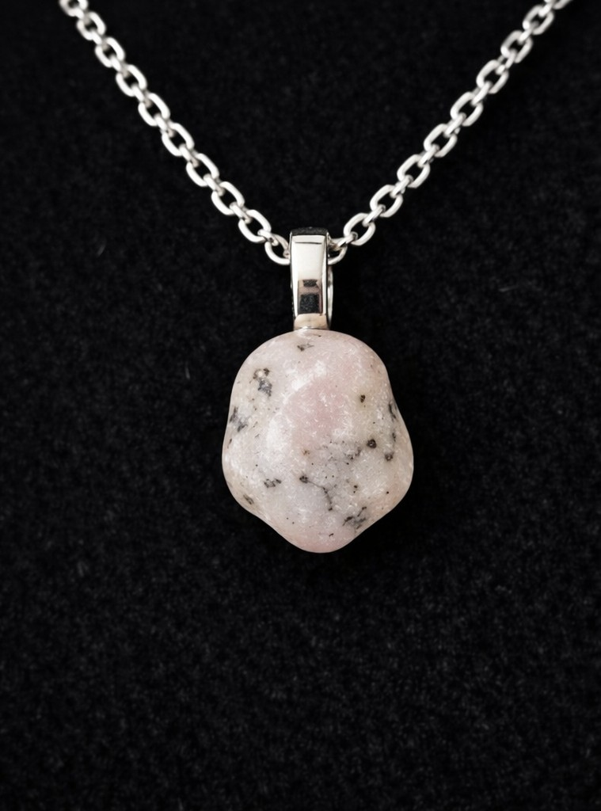
Pendant 11
Likely: granite / diorite • Niagara shoreline find • Pendant + chain included
A pale stone with darker flecks and soft mineral spotting. It has a classic shoreline look and a good balance between clean and textured.
Very easy to pair with anything.
Pay What You Think Is Fair • Suggested Minimum: $20
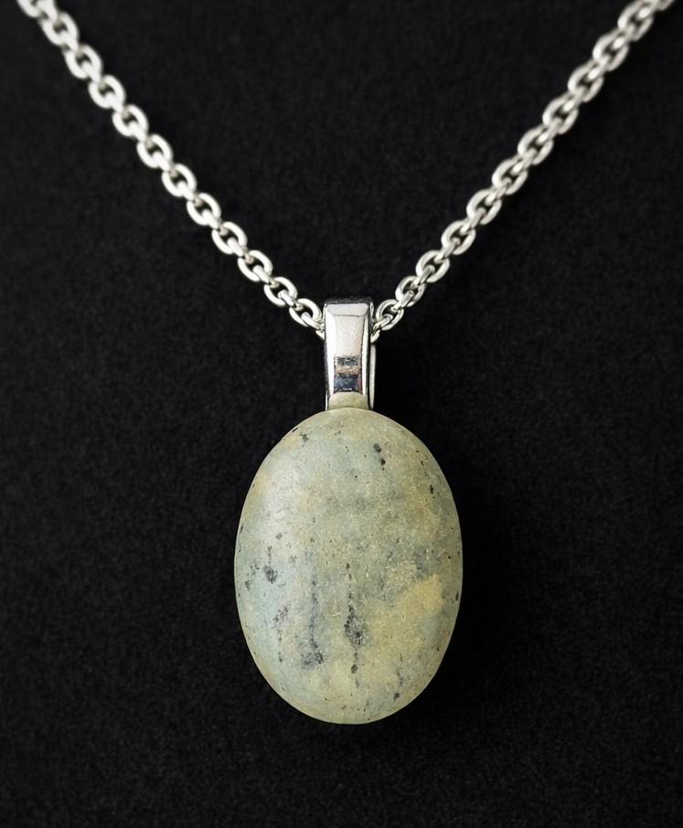
Pendant 4
Likely: serpentine / greenstone • Niagara shoreline find • Pendant + chain included
A muted green stone with fine speckling and a soft matte finish. It feels grounded and natural without asking for too much attention.
A very wearable green piece.
Pay What You Think Is Fair • Suggested Minimum: $20
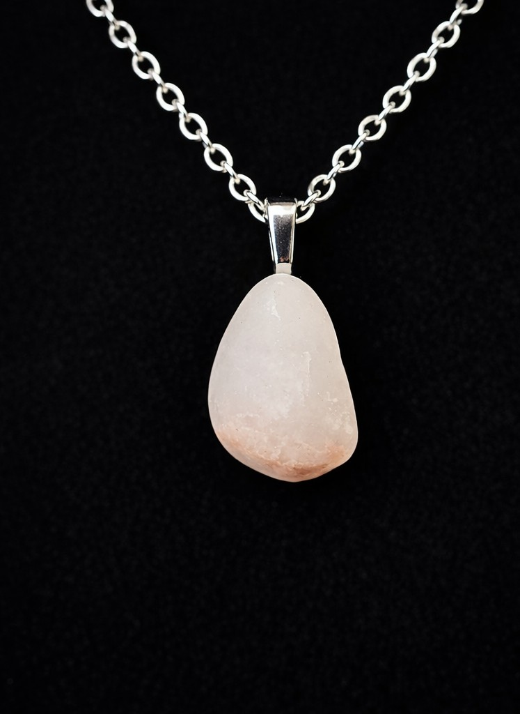
Pendant 10
Likely: milky quartz • Niagara shoreline find • Pendant + chain included
A soft white stone with faint translucence and a cleaner overall look than most of the collection. Light, simple, and quietly polished.
A good piece if you want minimal without looking flat.
Pay What You Think Is Fair • Suggested Minimum: $20
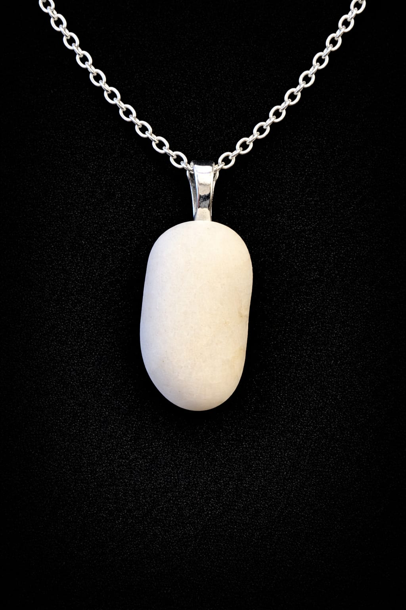
Pendant 26
Likely: white quartzite • Niagara shoreline find • Pendant + chain included
A matte white stone with a very simple silhouette and almost no visual noise. Clean, minimal, and easy to wear.
Probably the most understated piece in this release.
Pay What You Think Is Fair • Suggested Minimum: $20
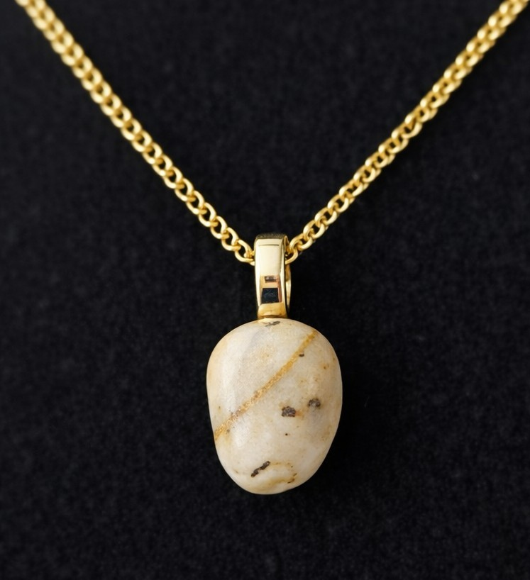
Pendant 2
Likely: pale jasper / limestone • Niagara shoreline find • Pendant + chain included
A smooth cream stone with subtle natural markings and a soft overall palette. Clean, neutral, and easy to wear.
A simple shoreline piece with a polished shape.
Pay What You Think Is Fair • Suggested Minimum: $20
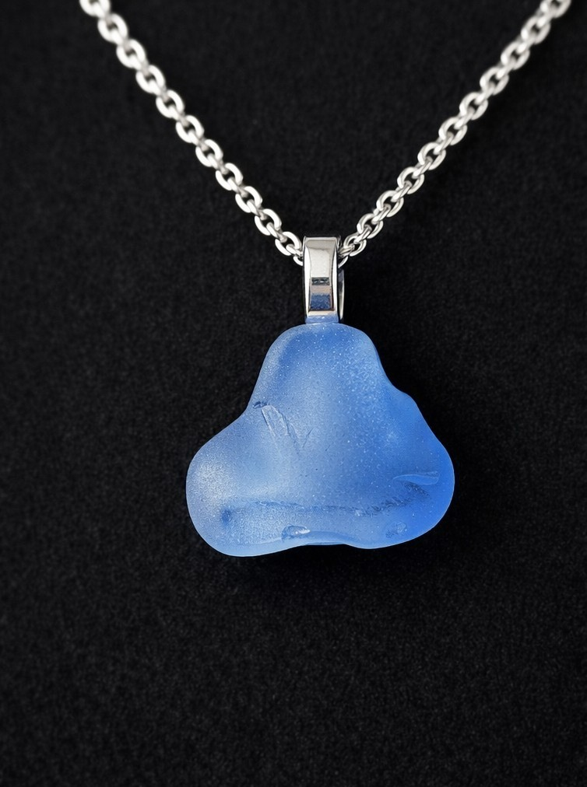
Claimed
Pendant 1
Likely: blue sea glass • Niagara shoreline find • Pendant + chain included
A bright blue sea glass pendant from this release. Already claimed.
Pay What You Think Is Fair • Suggested Minimum: $20
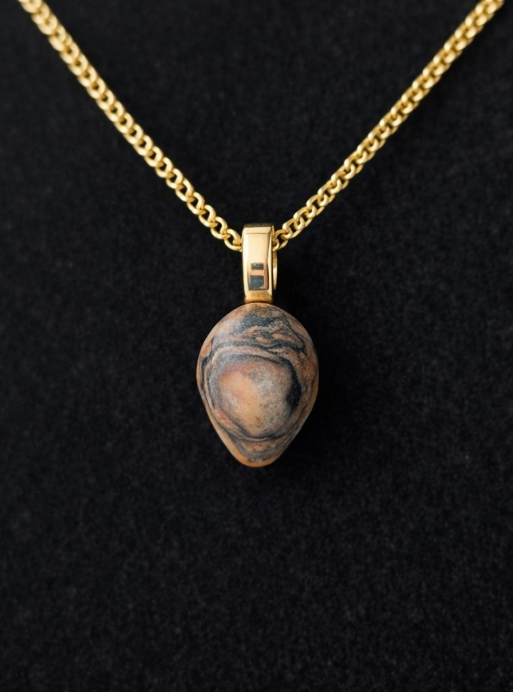
Claimed
Pendant 9
Likely: jasper • Niagara shoreline find • Pendant + chain included
A warm brown patterned shoreline pendant from this release. Already claimed.
Pay What You Think Is Fair • Suggested Minimum: $20
How It Works
Pay What You Think Is Fair
Each listing includes a suggested minimum to help cover materials and time.
From there, you decide what feels fair to you and to the piece.
What’s Included
Each listing includes the pendant and chain shown unless noted otherwise.
If you want a custom piece or different chain length, email me.
Claim a Piece
Click any claim button to email me. I’ll confirm availability, total, and pickup or shipping details.